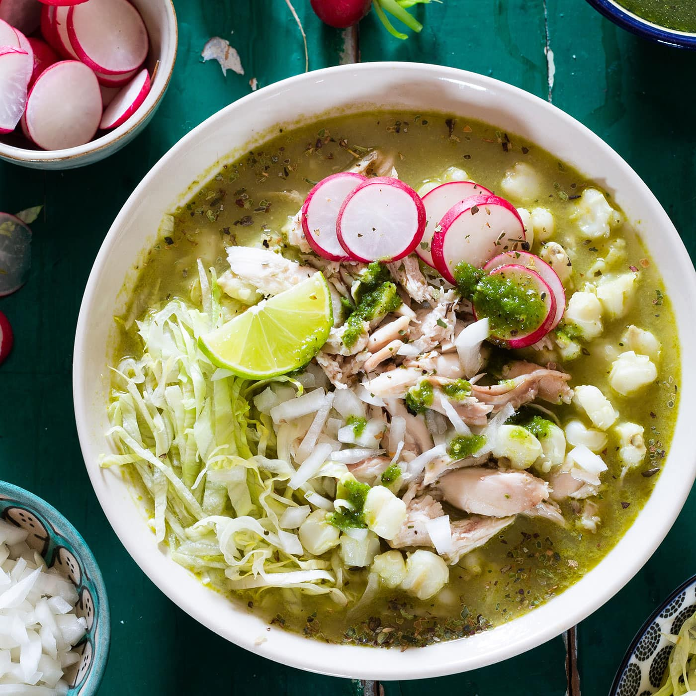

Pozole Verde

Pozole verde is a delightful traditional mexican soup consisting
of meat and hominy in a rich tomatillo and green pepper broth.
Existing far prior to Columbus' arrival in the Western Hemisphere,
pozole is as old-school as Mesoamerican cuisine gets.
Ingredients
- Chicken Stock
- Chicken Breast
- Tomatiilos
- Onions and Garlic
- Green peppers such as poblano and jalapeno
- Hominy
- All the fixin's
Steps
- Bring chicken stock to a boil
- Sear chicken skin side down then add to stock
- Remove chicken after 25 minutes and shred when cool
- Skim stock of fat
- Blend tomatillos with onion, peppers, garlic, cilantro, and oregano.
- Add one cup of chicken stock to blend and puree
- Heat oil until shimmering, then add puree until a deep green.
- Add puree to reserved stock. Return chicken and warm until heated through
- Serve pozole in bowls with all the fiiixin's at the table.